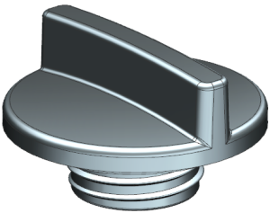
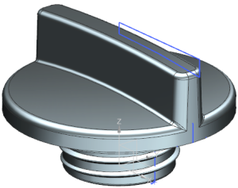

显示部件特征
打开部件并显示它的所有对象。
-
打开 des07_oil_cap。

-
点击实用工具工具条上的显示和隐藏
 。
。 -
在显示和隐藏对话框的显示列中，点击显示全部
 。
。NX 将显示所有的基准、草图、曲线以及实体对象。

-
点击关闭。
在下面的步骤中，您将查看部件导航器中的模型历史记录。
-
 模型历史记录
模型历史记录 -
 基准坐标系 (0)
基准坐标系 (0) -
 草图 (1)
草图 (1) -
 草图 (2)
草图 (2) -
 回转 (3)
回转 (3) -
 草图 (4)
草图 (4) -
 拉伸 (5)
拉伸 (5) -
 拔模 (6)
拔模 (6) -
回转 (7)
-
草图 (8)
-
螺旋线 (9)
-
草图 (10)
-
扫掠 (11)
-
修剪体 (12)
-
求和 (13)
-
边倒圆 (14)
-
边倒圆 (15)
-
边倒圆 (16)